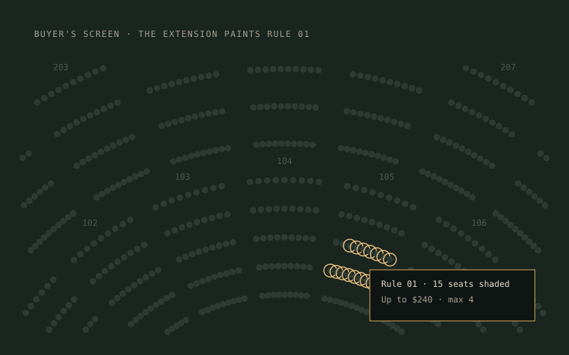
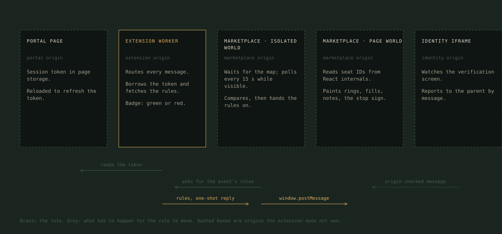
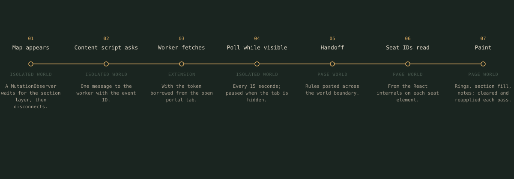

Buyer extension
A Chrome extension that runs inside Ticketmaster, reads the buy rules an on-sale manager saved in the portal, and paints them onto the venue map a buyer is already looking at.
- Role
- Built by Scott; one other developer on the seat-ID matching
- Stack
- Chrome MV3 · JavaScript · React (popup) · Vite
- Where
- Etainement, one of the larger US brokers · proprietary
- Code
- Walkthrough on request

What a buyer sees. The map is the marketplace's; the rings, the note, and the stop sign are the extension's. Synthetic venue, synthetic rule.
The problem
The buyer's screen belongs to someone else.
Placeholder. During an on-sale a buyer has a venue map on screen and a few minutes to act. The rules for what to buy live in another tool, on another origin, written by someone else. Reading them from a second window costs the seconds the sale is decided in.
Placeholder. The marketplace's page is not built to be read by anyone but the marketplace: seat elements carry no usable ID, the map renders late and re-renders on zoom, the markup changes under you, and the response bodies that would settle every question are off limits to an extension under Manifest V3.
Placeholder. The job was to put the rule where the buyer is looking, without owning the page, a login, or a store listing.
What was built
Five origins, one rule.
Placeholder. A rule crosses five JavaScript worlds between the portal and the paint: the portal page where the session lives, the extension's worker, the marketplace's isolated world where the content script runs, the marketplace's own page world where the seats can be read, and the identity iframe on a third origin. None of them can see the others directly.

- Worker
- Routes every message; borrows the portal token; the badge is its status light
- Content script
- Detects the page type, waits for the map, polls, compares, hands on
- Page world
- Reads seat IDs from the site's own React internals and paints
- Identity iframe
- A content script inside the cross-origin frame, reporting by origin-checked message
- Popup
- One React form, pre-filled with the captured cart for a human to correct
The rule's path
From the map appearing to the paint, in seven steps.

Placeholder. The poll runs every 15 seconds while the tab is visible and stops when it is hidden. A pass that finds nothing changed stops before the paint. Panning or zooming repaints from the last rules, one second after movement stops, with no network call.
Placeholder. If no portal tab is open the fetch fails and the badge turns red; the buyer knows before the sale does.
The hard parts
In the order they were met.
Matching rules to seats on a map you do not own
Placeholder. Three approaches over time: seat numbers, then grid coordinates, then the site's own seat IDs read from the React internals on each element, which is only possible from the page's world. The earlier logic stayed as the fallback.
Reading the page's own network responses
Placeholder. Manifest V3 cannot read response bodies, so a page-world script wraps fetch and XMLHttpRequest and copies one response. The race: the page could make the call before the extension was ready. The fix moved the interceptor to a manifest-declared script at document start and added a buffer drained once the service starts.
Timing on a late-rendering single-page app
Placeholder. Content scripts start before the body exists; the map arrives seconds later and re-renders on zoom. Observers wait for one specific element and fire once, a debounce absorbs the zoom, a re-entrancy flag keeps two passes from overlapping, and everything pauses while the tab is hidden.
The cross-origin identity iframe
Placeholder. Verification happens in a frame the parent cannot read. A content script inside it reports to the parent by window message with explicit target origins, and the parent checks the sender. Detection is redundant on purpose: an observer, a periodic check, and a short burst after submit.
Auth without a login
Placeholder. The extension has no sign-in. It reads the portal's token from an open portal tab, treats it as good for a fixed window, and reloads the tab when it is stale so the portal's own app refreshes it. The backend accepts one pinned extension ID.
Markup that changes under you
Placeholder. Sixty of the site's test hooks are targeted, each written three ways because the site has spelled the attribute three ways over time. Parsers prefer the page's embedded data and fall back to the DOM; order confirmation has three layers, the last of them a human.
The two-tier cache on the distribution portal
Placeholder. A second surface re-renders its table constantly. The first version refetched rules per row. The current one scopes the observer, debounces, groups rows by event, shares one in-flight request per event, and caches in memory and then in extension storage.
What I would do differently
Three things, in order of regret.
Placeholder. A guard for the day the site's internals change shape: today a break paints zero seats and the only signal is a note that reads zero. Then tests, of which there are none. Then one shared rules cache on the marketplace side instead of one poll per tab.
Placeholder. Over a hundred buyers used it through two seasons of on-sales. The numbers behind that stay off the internet on purpose and are available in an interview.